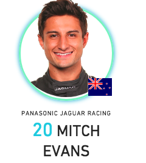

NextEV NIO is the evolution of the team that started off as Team China Racing and carried Nelson Piquet Jr to the inaugural drivers’ championship.Piquet remains with the team for a third season, and is partnered by Oliver Turvey for a second straight campaign.When the powertrain rules were opened up for season two, NextEV opted for a twin motor solution. It has decided to stick with this for season three, making it unique among the 10 teams.NIO is NextEV’s road car brand. It recently unveiled the EP9 all-electric supercar, which set a new lap record of the Nurburgring for an electric vehicle.
About the racer in this car.
1.ADAM CARROLL

Intresting Fact
Carroll was the winner of the first-ever GP2 race?
BIOGRAPHY
It was mission accomplished for Carroll as he brought his car home in one piece in Hong Kong on his and Jaguar’s debut. He followed this up with another finish in Marrakesh, now the next step is to crack the top 10 and register the team’s first points
After multiple wins in GP2 – and F1 tests for BAR and Honda – Carroll’s most high-profile success came when he won the A1GP title for Team Ireland. He’s raced in Indycar and sportscars and currently campaigns a Porsche in the FIA World Endurance Championship.
Points & Results.
Points : 5
Poles : 0
Front Rows : 0
Fastest Laps :0
Raced Laps :439
Led Races :0
Led Laps : 0
Led Km : 0
2.LOIC DUVAL

Intresting Fact
Haa...at just 16 years of age, Evans became the youngest-ever winner of the New Zealand Grand Prix in 2011?
BIOGRAPHY
A technical issue brought Evans’ Formula E debut to a premature end, but he made the finish the next time out in Marrakesh.A protege of Mark Webber, Evans was the 2012 GP3 champion and has been a regular winner in GP2 since graduating to the F1 feeder series in 2013.
Points & Results.
Points : 16
Poles : 0
Front Rows : 0
Fastest Laps :1
Raced Laps :323
Led Races :0
Led Laps : 0
Led Km : 0